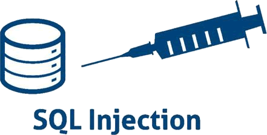

首页 > 编程笔记
SQL注入是什么，如何避免SQL注入？
SQL 注入（SQL Injection）是发生在 Web 程序中数据库层的安全漏洞，是网站存在最多也是最简单的漏洞。主要原因是程序对用户输入数据的合法性没有判断和处理，导致攻击者可以在 Web 应用程序中事先定义好的 SQL 语句中添加额外的 SQL 语句，在管理员不知情的情况下实现非法操作，以此来实现欺骗数据库服务器执行非授权的任意查询，从而进一步获取到数据信息。
简而言之，SQL 注入就是在用户输入的字符串中加入 SQL 语句，如果在设计不良的程序中忽略了检查，那么这些注入进去的 SQL 语句就会被数据库服务器误认为是正常的 SQL 语句而运行，攻击者就可以执行计划外的命令或访问未被授权的数据。
如果值属于特定的类型或有具体的格式，那么在拼接 SQL 语句之前就要进行校验，验证其有效性。比如对于某个传入的值，如果可以确定是整型，则要判断它是否为整型，在浏览器端（客户端）和服务器端都需要进行验证。
MySQL 的参数格式是以“?”字符加上参数名称而成，如下所示：
有些人认为存储过程可以避免 SQL 注入，存储过程在传统行业里用得比较多，对于权限的控制是有一定用处的，但如果存储过程用到了动态查询，拼接 SQL，一样会存在安全隐患。
下面是在开发过程中可以避免 SQL 注入的一些方法。
一些编程框架对于写出更安全的代码也有一定的帮助，因为它提供了一些处理字符串的函数和使用查询参数的方法。但同样，你仍然可以编写出不安全的 SQL 语句。所以归根到底，我们需要有良好的编码规范，并能充分利用参数化查询、字符串处理和参数校验等多种办法来保护数据库和程序的安全。
说明：SQL 注入技术不是单凭一篇文章就可以讲完的，这里只带领大家掌握 SQL 注入的原理及常见的几种防止 SQL 注入的方法。
简而言之，SQL 注入就是在用户输入的字符串中加入 SQL 语句，如果在设计不良的程序中忽略了检查，那么这些注入进去的 SQL 语句就会被数据库服务器误认为是正常的 SQL 语句而运行，攻击者就可以执行计划外的命令或访问未被授权的数据。

SQL 注入已经成为互联网世界 Web 应用程序的最大风险，我们有必要从开发、测试、上线等各个环节对其进行防范。下面介绍 SQL 注入的原理及避免 SQL 注入的一些方法。
SQL注入的原理
SQL 注入的原理主要有以下 4 点：1）恶意拼接查询
我们知道，SQL 语句可以查询、插入、更新和删除数据，且使用分号来分隔不同的命令。例如：SELECT * FROM users WHERE user_id = $user_id
其中，user_id 是传入的参数，如果传入的参数值为“1234; DELETE FROM users”，那么最终的查询语句会变为：SELECT * FROM users WHERE user_id = 1234; DELETE FROM users
如果以上语句执行，则会删除 users 表中的所有数据。2）利用注释执行非法命令。
SQL 语句中可以插入注释。例如：SELECT COUNT(*) AS 'num' FROM game_score WHERE game_id=24411 AND version=$version
如果 version 包含了恶意的字符串'-1' OR 3 AND SLEEP(500)--，那么最终查询语句会变为：
SELECT COUNT(*) AS 'num' FROM game_score WHERE game_id=24411 AND version='-1' OR 3 AND SLEEP(500)--
以上恶意查询只是想耗尽系统资源，SLEEP(500) 将导致 SQL 语句一直运行。如果其中添加了修改、删除数据的恶意指令，那么将会造成更大的破坏。3）传入非法参数
SQL 语句中传入的字符串参数是用单引号引起来的，如果字符串本身包含单引号而没有被处理，那么可能会篡改原本 SQL 语句的作用。 例如：SELECT * FROM user_name WHERE user_name = $user_name
如果 user_name 传入参数值为 G'chen，那么最终的查询语句会变为：SELECT * FROM user_name WHERE user_name ='G'chen'
一般情况下，以上语句会执行出错，这样的语句风险比较小。虽然没有语法错误，但可能会恶意产生 SQL 语句，并且以一种你不期望的方式运行。4）添加额外条件
在 SQL 语句中添加一些额外条件，以此来改变执行行为。条件一般为真值表达式。例如：UPDATE users SET userpass='$userpass' WHERE user_id=$user_id;
如果 user_id 被传入恶意的字符串“1234 OR TRUE”，那么最终的 SQL 语句会变为：UPDATE users SET userpass= '123456' WHERE user_id=1234 OR TRUE;
这将更改所有用户的密码。避免SQL注入
对于 SQL 注入，我们可以采取适当的预防措施来保护数据安全。下面是避免 SQL 注入的一些方法。1. 过滤输入内容，校验字符串
过滤输入内容就是在数据提交到数据库之前，就把用户输入中的不合法字符剔除掉。可以使用编程语言提供的处理函数或自己的处理函数来进行过滤，还可以使用正则表达式匹配安全的字符串。如果值属于特定的类型或有具体的格式，那么在拼接 SQL 语句之前就要进行校验，验证其有效性。比如对于某个传入的值，如果可以确定是整型，则要判断它是否为整型，在浏览器端（客户端）和服务器端都需要进行验证。
2. 参数化查询
参数化查询目前被视作是预防 SQL 注入攻击最有效的方法。参数化查询是指在设计与数据库连接并访问数据时，在需要填入数值或数据的地方，使用参数（Parameter）来给值。MySQL 的参数格式是以“?”字符加上参数名称而成，如下所示：
UPDATE myTable SET c1 = ?c1, c2 = ?c2, c3 = ?c3 WHERE c4 = ?c4
在使用参数化查询的情况下，数据库服务器不会将参数的内容视为 SQL 语句的一部分来进行处理，而是在数据库完成 SQL 语句的编译之后，才套用参数运行。因此就算参数中含有破坏性的指令，也不会被数据库所运行。3. 安全测试、安全审计
除了开发规范，还需要合适的工具来确保代码的安全。我们应该在开发过程中应对代码进行审查，在测试环节使用工具进行扫描，上线后定期扫描安全漏洞。通过多个环节的检查，一般是可以避免 SQL 注入的。有些人认为存储过程可以避免 SQL 注入，存储过程在传统行业里用得比较多，对于权限的控制是有一定用处的，但如果存储过程用到了动态查询，拼接 SQL，一样会存在安全隐患。
下面是在开发过程中可以避免 SQL 注入的一些方法。
1. 避免使用动态SQL
避免将用户的输入数据直接放入 SQL 语句中，最好使用准备好的语句和参数化查询，这样更安全。2. 不要将敏感数据保留在纯文本中
加密存储在数据库中的私有/机密数据，这样可以提供了另一级保护，以防攻击者成功地排出敏感数据。3. 限制数据库权限和特权
将数据库用户的功能设置为最低要求；这将限制攻击者在设法获取访问权限时可以执行的操作。4. 避免直接向用户显示数据库错误
攻击者可以使用这些错误消息来获取有关数据库的信息。一些编程框架对于写出更安全的代码也有一定的帮助，因为它提供了一些处理字符串的函数和使用查询参数的方法。但同样，你仍然可以编写出不安全的 SQL 语句。所以归根到底，我们需要有良好的编码规范，并能充分利用参数化查询、字符串处理和参数校验等多种办法来保护数据库和程序的安全。
说明：SQL 注入技术不是单凭一篇文章就可以讲完的，这里只带领大家掌握 SQL 注入的原理及常见的几种防止 SQL 注入的方法。
关注公众号「站长严长生」，在手机上阅读所有教程，随时随地都能学习。内含一款搜索神器，免费下载全网书籍和视频。

微信扫码关注公众号